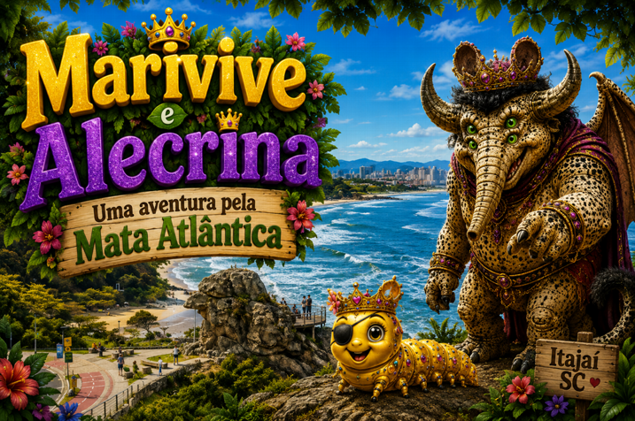

Marivive era uma lagarta muito especial que morava em um cogumelo na Mata Atlântica, em Itajaí, Santa Catarina.
Ela tem olhos laranjas, corpo dourado e brilhante, uma pequena coroa desenhada na cabeça e mede apenas 7 centímetros de comprimento. Marivive é alegre, corajosa, desastrada e, às vezes, um pouco chorona.
Quando era bem pequena, caiu de um ipê e machucou um dos olhos em um espinho. Desde então, usa um tapa-olho.
Certo dia, ela passeava pela margem do Rio Itajaí-Açu quando uma capivara deu uma enorme mordida na grama onde ela estava.
— Socorro! — gritou Marivive.
A capivara levou um susto e cuspiu o tufo de grama.
Quando viu a lagarta, sorriu e disse:
— Hum... grama com cauda de lagarta! Que delícia!
Marivive respondeu rapidamente:
— Você não pode me comer! Estou esperando minha amiga Alecrina.
— Alecrina? Quem é Alecrina? — perguntou a capivara.

Marivive respondeu com toda a confiança:
— Ela tem 11 metros de altura, três orelhas arredondadas e uma enorme cauda de leão.
A capivara arregalou os olhos e perguntou:
— E onde vocês vão se encontrar?
Então respondeu Marivive:
— Na beira desse rio é o lugar. E purê de capivara é seu jantar.

A capivara tremeu de medo e falou:
— Purê de capivara? Estou indo embora!
E saiu correndo o mais rápido que podia.
Marivive começou a rir.
— Capivara boba! Não sabe que a Alecrina nem existe!

Continuando sua caminhada, Marivive tropeçou em um galho e caiu dentro do rio.
Nesse instante, um boto-cinza que vivia próximo aos molhes da Barra do Rio Itajaí-Açu mergulhou e a pegou.
— Hum... um petisco de lagarta! Estava precisando de um aperitivo! — disse o boto.


Sem perder a coragem, Marivive respondeu:
— É melhor você fugir daqui.
— Fugir? Mas por quê? — perguntou o boto.
— Porque Alecrina está chegando. Já consigo sentir o tremor dos passos dela.
O boto ficou curioso.
— Quem é Alecrina?
Marivive explicou:
— Ela tem 4 olhos verdes horripilantes, tem uma imensa tromba de elefante e em suas costas asas exuberantes.
Perguntou o boto:
— E onde vocês vão se encontrar?


A lagarta respondeu:
— Logo ali na praia do Atalaia é o lugar. E boto empanado é o que ela adora almoçar.
O boto arregalou os olhos.
— Boto empanado? Melhor eu sair a nado.
E desapareceu rapidamente.
Marivive sorriu.
— Boto bobo! Não sabe que a Alecrina não existe.

Então, Marivive continuou sua jornada e encontrou uma gralha-azul pousada lá no alto de um ipê.
— Venha, lagartinha mimosa! Vai começar uma festa! — convidou a ave.
A lagarta adradeceu:
— Obrigada gralha-azul, não posso ir à festa agora pois irei encontrar a Alecrina.
A gralha perguntou:
— Alecrina! Quem é Alecrina?

A lagarta flertando com a sorte respondeu:
— Vou te dizer quem é Alecrina. — Ela tem pele de crocodilo,
cabelo arrepiado tipo cauda de esquilo
preto e curto que combinam com seu estilo.
e sua comida favorita é sorvete de gralha servido a quilo.

A gralha abriu as asas e falou.
— Sorvete de gralha? Nem pensar!
E voou para bem longe.
Marivive deu risada.
— Gralha boba! Não sabe que a Alecrina não existe.

Já voltando para casa, Marivive encontrou uma jaguatirica.
— Para onde você pensa que vai, lagartinha? — perguntou a felina.
Marivive respondeu:
— Vou encontrar minha amiga Alecrina.
A jaguatirica curiosa perguntou:
— E quem é Alecrina?

Marivive estufou o seu pequeno peito de lagarta e respondeu:
— Ela tem asas bem grandes.
— Chifres altos como as Cordilheiras dos Andes.
— Coroa de princesa e muita riqueza.
A jaguatirica perguntou:
— E quando ela chega?

Respondeu Marivive:
— Daqui a pouquinho. E jaguatirica assada é seu lanche favorito.
A jaguatirica nem esperou ouvir mais nada.
— Jaguatirica assada? Estou fora!
E correu para bem longe.
Marivive riu outra vez.
— Jaguatirica boba! Não sabe que a Alecrina não existe.
Exemplo de cadeia alimentar
🌿 Planta → 🐛 Lagarta → 🐦 Gralha-azul → 🐆 Jaguatirica → 🍄 Fungos e bactérias
O que cada um faz?
🌿 Produtor: Planta – produz seu próprio alimento.
🐛 Consumidor primário: Lagarta – alimenta-se da planta.
🐦 Consumidor secundário: Gralha-azul – alimenta-se da lagarta.
🐆 Consumidor terciário: Jaguatirica – alimenta-se de outros animais.
🍄 Decompositores: Fungos e bactérias – decompõem os seres vivos mortos e devolvem nutrientes ao solo.
A cadeia alimentar mostra como a energia passa de um ser vivo para outro. Ela ajuda a manter o equilíbrio da natureza, pois todos os seres vivos têm uma função importante no ambiente.
CONTINUA ...
Em Itajaí, as capivaras são encontradas principalmente em locais próximos à água, pois são animais semiaquáticos. É possível observá-las: nas margens do Rio Itajaí-Açu. A água é essencial para que elas possam fugir de predadores, regular a temperatura do corpo e se reproduzir.
A capivara é o maior roedor do mundo, podendo medir cerca de 1,3 metro de comprimento e pesar até 100 kg. Apesar do tamanho, é uma excelente nadadora e consegue permanecer vários minutos debaixo d'água para escapar de predadores. Seu nome científico, Hydrochoerus, significa "porco-d'água", em referência ao seu hábito de viver próximo aos rios e lagoas.
Ele prefere águas rasas e calmas, ricas em peixes, onde encontra alimento com facilidade. Ele é um animal carnívoro. Sua alimentação inclui: peixes (como sardinhas, corvinas e paratis), lulas, polvos, camarões e outros pequenos invertebrados marinhos.
Ele utiliza a ecolocalização (sons emitidos e recebidos como eco) para localizar suas presas mesmo em águas com pouca visibilidade.
Ela é um animal onívoro, alimentando-se de: sementes, frutos, pinhões (semente da araucária), insetos, larvas, pequenos invertebrados, ovos e filhotes de outras aves.
Ela tem um importante papel na natureza ao esconder sementes para comer depois. Muitas dessas sementes acabam germinando e dando origem a novas árvores.
A jaguatirica é um animal carnívoro. Sua alimentação inclui: roedores; cutias, pacas, gambás, aves, répteis e anfíbios.
Ela é uma excelente caçadora, com hábitos principalmente noturnos.
A jaguatirica é uma excelente escaladora, nadadora e saltadora. Ela consegue subir em árvores com facilidade e também atravessar rios quando necessário. Seu nome vem do tupi îagûara'tîrika, que significa "onça pequena".